14주차 · 구조체 + 연결리스트 맛보기¶
이번 주는 서로 다른 자료형을 하나의 의미 있는 데이터 묶음으로 만드는 방법을 배운다. 지금까지 배열은 같은 자료형을 여러 개 저장할 때 사용했다. 하지만 실제 로봇 데이터는 거리, 속도, 상태 문자열처럼 서로 다른 값이 한 세트로 움직인다. C에서는 이런 묶음을 struct로 표현한다.
구조체를 이해하면 Arduino에서 만든 센서 패킷을 PC 프로그램에서 해석하고, 나중에는 ROS2 메시지로 바꾸는 흐름까지 자연스럽게 이어진다. 14주차의 목표는 "구조체 문법을 외우기"가 아니라, 데이터를 어떤 단위로 묶어야 프로그램이 읽기 쉬워지는지를 익히는 것이다.
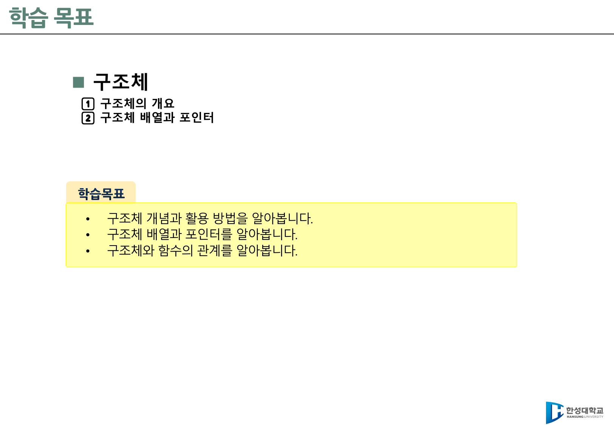
학습 목표¶
struct가 왜 필요한지 배열과 비교해 설명할 수 있다.- 구조체 선언, 구조체 변수 생성, 초기화, 멤버 접근 연산자
.를 사용할 수 있다. - 구조체 배열을 만들고 반복문으로 순회할 수 있다.
- 구조체 포인터와
->연산자를 사용할 수 있다. - 구조체를 함수 인수로 전달할 때 값 복사와 포인터 전달의 차이를 설명할 수 있다.
- 구조체 안에 포인터 멤버를 넣어 연결리스트의 기본 모양을 이해한다.
- Arduino UNO R4에서 만든 문자열 패킷을 C 구조체와 ROS2 메시지 관점으로 연결할 수 있다.
이번 주차의 큰 그림¶
| 상황 | 적합한 표현 | 이유 |
|---|---|---|
| 학생 30명의 국어 점수 | int score[30] |
모두 같은 자료형 |
| 학생 1명의 이름, 학번, 평균 | struct student |
서로 다른 자료형이 한 사람을 설명 |
| 센서 10개의 거리, 속도, 상태 | struct SensorPacket packets[10] |
패킷 단위로 묶고 여러 개 저장 |
| 다음 데이터로 이어지는 노드 | struct Node *next |
구조체 안에 다음 구조체 주소를 저장 |
| ROS2 메시지 | 필드가 있는 메시지 타입 | 구조체처럼 이름 붙은 값의 묶음 |
배열은 "같은 종류의 값이 여러 개"일 때 좋다. 구조체는 "서로 다른 종류의 값이 함께 하나의 대상을 설명"할 때 좋다. 로봇 프로그램에서는 두 방식이 함께 쓰인다. 예를 들어 LiDAR 거리값은 배열로 저장하지만, 로봇의 현재 상태는 x, y, theta, speed, state 같은 값을 구조체로 묶는 편이 읽기 쉽다.
원본 자료 반영 보강 포인트¶
이번 페이지는 첨부된 14-1. 구조체.pdf, 14-2. 구조체 실습.pdf, 14-3. 구조체 도전 문제.pdf의 흐름을 기준으로 보강했다. 원본 자료의 핵심은 다음 네 가지다.
| 원본 자료 | 수업에서 반드시 짚을 내용 | 이 페이지의 위치 |
|---|---|---|
14-1. 구조체.pdf |
구조체는 형틀(template)을 먼저 만들고, 그 형틀로 변수를 만든다 | 1~3절 |
14-1. 구조체.pdf |
구조체 배열, 구조체 포인터, (*p).member와 p->member |
4~5절 |
14-2. 구조체 실습.pdf |
구조체 변수 대입, 포인터 멤버, 구조체 함수 인수와 반환값 | 6~7절 |
14-3. 구조체 도전 문제.pdf |
중첩 구조체, 구조체 복사, 구조체 반환값 문제 풀이 | 12절 |
강의자는 슬라이드 이미지를 먼저 보여 주고, 바로 아래 해설 문단과 코드 조각을 판서하듯 따라가면 된다. 특히 구조체는 단어가 낯설어서 어렵게 느껴지지만, 실제로는 값들을 한 이름 아래 묶고, 그 묶음을 변수처럼 사용하는 문법이라고 반복해서 잡아 주는 것이 좋다.
3시간 강의 운영안¶
| 시간 | 내용 | 수업 포인트 |
|---|---|---|
| 0~20분 | 배열과 구조체 비교 | 같은 자료형 묶음과 다른 자료형 묶음의 차이를 예로 설명 |
| 20~50분 | 구조체 선언과 초기화 | struct student를 만들고 멤버 접근 . 실습 |
| 50~80분 | 구조체 배열 | 여러 학생 또는 여러 센서 패킷을 반복문으로 처리 |
| 80~110분 | 구조체 포인터 | (*p).member와 p->member의 관계 설명 |
| 110~135분 | 구조체와 함수 | 값 복사, 포인터 전달, 구조체 반환값 비교 |
| 135~155분 | 이중 포인터 맛보기 | 문자열 배열과 예상 문제 풀이로 포인터 복습 |
| 155~175분 | 연결리스트와 패킷 | next 포인터, Arduino 문자열 패킷, ROS2 메시지 연결 |
| 175~180분 | 형성평가 | ./->, 구조체 배열, 예상 문제 출력 확인 |
이론-실습 연결표¶
| 이론 개념 | 바로 해볼 실습 | 확인 질문 |
|---|---|---|
| 구조체는 서로 다른 값을 한 묶음으로 만든다 | struct Student를 선언하고 초기화한다 |
형틀 선언과 실제 변수 생성은 어떻게 다른가? |
| 구조체 배열은 패킷 목록이다 | 여러 학생 또는 센서 패킷을 반복문으로 출력한다 | 배열의 한 원소가 구조체 한 덩어리라는 점을 설명할 수 있는가? |
| 구조체 포인터는 원본 수정에 필요하다 | update_score(&student)로 멤버 값을 바꾼다 |
.와 ->는 언제 각각 쓰는가? |
| ROS2 메시지는 필드 묶음이다 | Arduino 문자열 패킷을 구조체 필드로 해석한다 | 구조체와 ROS2 메시지가 닮은 점은 무엇인가? |
1. 구조체는 사용자 정의 자료형이다¶
구조체는 C가 기본으로 제공하는 int, double, char만으로는 표현하기 어려운 데이터를 직접 묶어서 만드는 자료형이다.
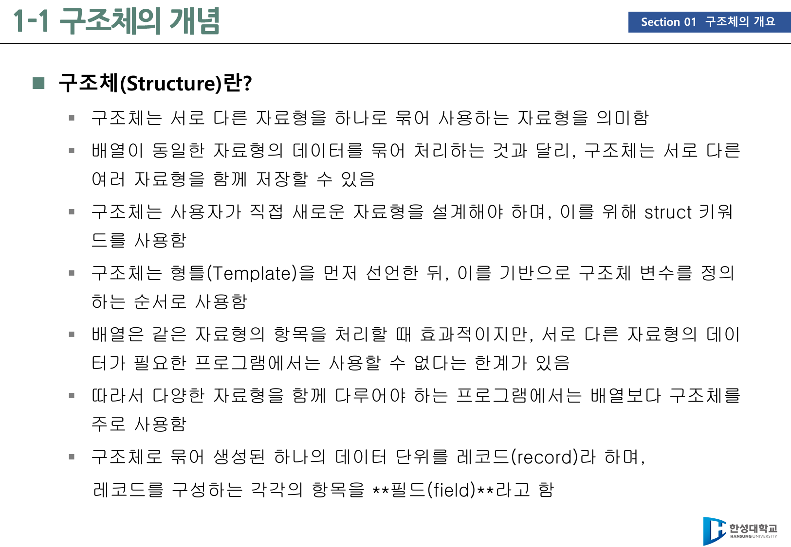
예를 들어 학생 한 명을 다음 변수들로 표현할 수 있다.
이 변수들이 모두 같은 학생을 설명한다는 사실은 사람이 기억해야 한다. 변수가 많아질수록 실수하기 쉽다. 구조체로 묶으면 코드가 이렇게 바뀐다.
이제 name, kor, math, avg는 따로 흩어진 값이 아니라 student라는 하나의 자료형에 속한 멤버가 된다. 이처럼 구조체는 데이터 사이의 관계를 코드에 남기는 도구다.
형틀과 실제 변수의 차이¶
원본 자료에서는 구조체를 형틀(template)이라고 설명한다. 이 표현을 꼭 잡아야 한다. struct student { ... };는 학생 데이터를 저장하는 공간을 만든 것이 아니라, "학생 데이터는 이런 모양으로 저장하겠다"라는 설계도를 만든 것이다. 실제 저장 공간은 struct student s1;처럼 변수를 선언할 때 생긴다.
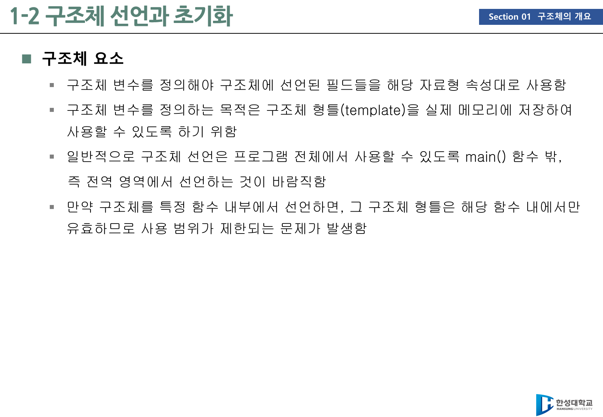
struct student {
char name[20];
int kor;
int math;
double avg;
}; // 형틀 선언: 아직 학생 한 명이 저장된 것은 아님
struct student s1; // 변수 선언: 이제 s1이라는 저장 공간이 생김
수업 중에는 다음 세 문장을 반복해서 확인하면 좋다.
- 구조체 선언은 자료형을 만드는 일이다.
- 구조체 변수 선언은 실제 메모리 공간을 만드는 일이다.
- 멤버는 구조체 변수 안에 들어 있는 각각의 필드다.
2. 구조체 선언과 초기화¶
구조체 선언은 "형틀"을 만드는 과정이다. 선언만으로 학생 데이터가 생기는 것은 아니다. 구조체 변수를 만들어야 실제 저장 공간이 생긴다.
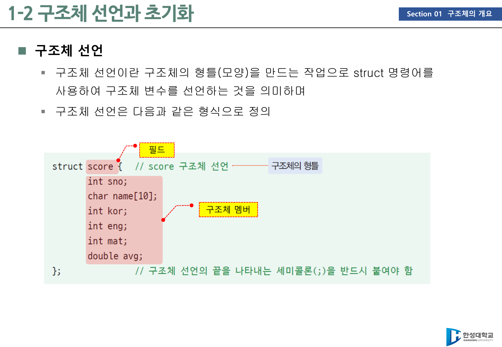
struct student {
char name[20];
int kor;
int math;
double avg;
};
int main(void)
{
struct student s1 = {"Kim", 90, 85, 87.5};
return 0;
}
구조체는 보통 함수 밖 전역 영역에 선언한다. 그래야 여러 함수가 같은 구조체 자료형을 사용할 수 있다. 실제 값이 저장되는 구조체 변수는 필요한 함수 안에서 만들면 된다.
구조체 선언 위치¶
구조체 형틀을 main() 함수 안에 선언하면 그 함수 안에서만 사용할 수 있다. 여러 함수가 같은 구조체를 사용해야 한다면 함수 밖에 선언한다.
struct student {
char name[20];
int kor;
int math;
double avg;
};
void print_student(struct student s);
int main(void)
{
struct student s1 = {"Kim", 90, 85, 87.5};
print_student(s1);
return 0;
}
초보자가 자주 하는 실수는 main() 안에서 구조체를 선언해 놓고 다른 함수의 매개변수에서 그 구조체 이름을 쓰는 것이다. 함수 밖에 구조체를 선언하면 이런 범위(scope) 문제를 줄일 수 있다.
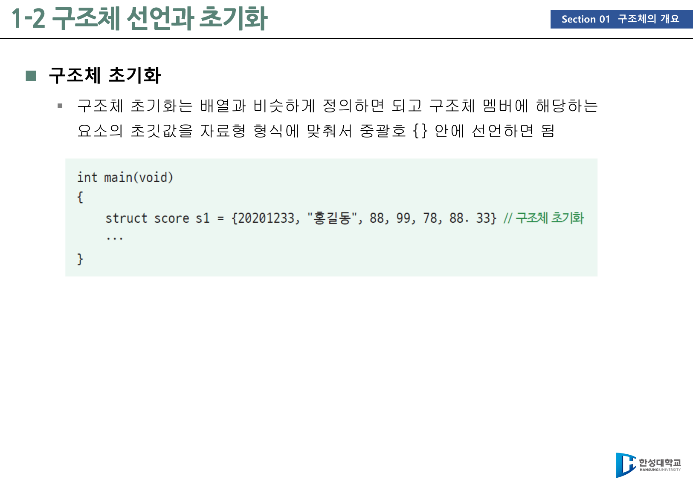
초기화할 때는 멤버 선언 순서대로 값을 넣는다. 일부 멤버만 초기화하면 나머지 멤버는 0 또는 빈 값으로 채워진다. 하지만 초보 단계에서는 모든 멤버를 명확히 채우는 습관이 좋다.
구조체 변수 생성 방식¶
원본 자료는 구조체 변수 생성 방식을 따로 강조한다. 다음 세 방식은 모두 가능하지만, 강의에서는 첫 번째 방식을 기본으로 잡고 나머지는 읽을 수 있는 정도로 소개하면 충분하다.
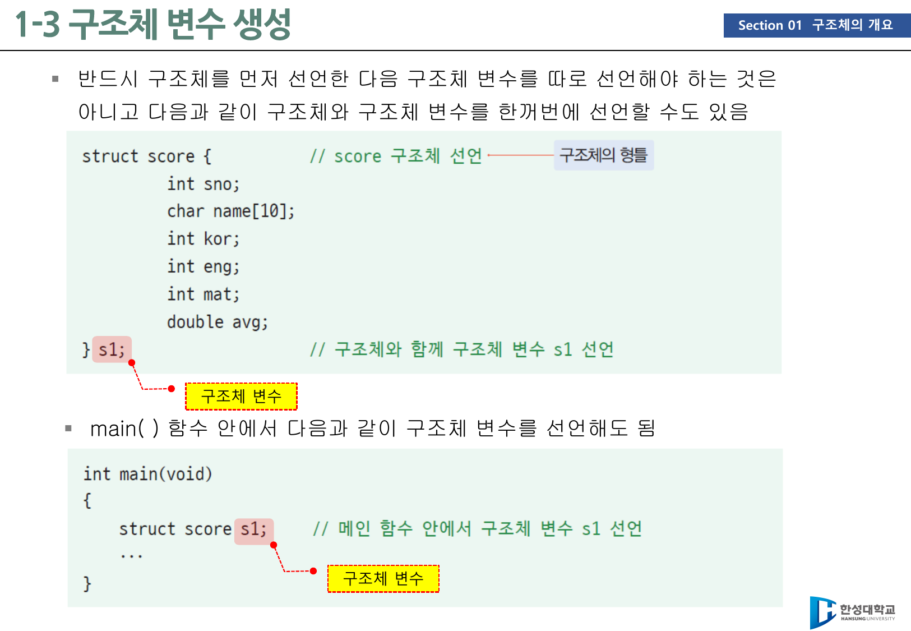
typedef를 사용하면 긴 struct score 표현을 짧게 줄일 수 있다.
도전 문제에서 보이는 PS avg(PS s1, PS s2); 같은 형태는 PS가 어떤 구조체의 별칭으로 정의되어 있다는 뜻이다.
3. 멤버 접근 연산자 .¶
구조체 변수 안의 멤버에 접근할 때는 점 연산자 .를 사용한다.
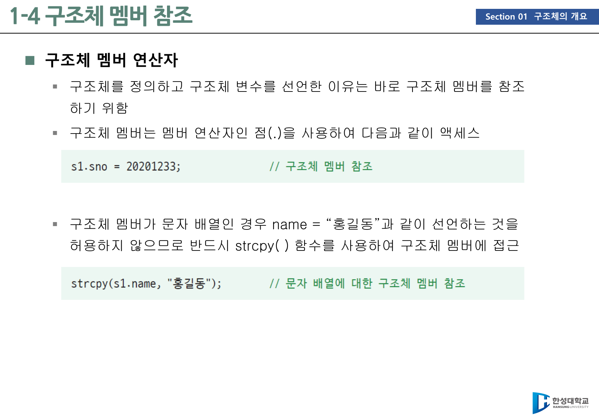
struct student s1 = {"Lee", 88, 91, 0.0};
s1.avg = (s1.kor + s1.math) / 2.0;
printf("%s %.1f\n", s1.name, s1.avg);
문자 배열 멤버는 주의가 필요하다. C에서 배열 이름에는 대입할 수 없기 때문에 다음 코드는 사용할 수 없다.
문자열을 나중에 바꾸려면 strcpy()를 사용한다.
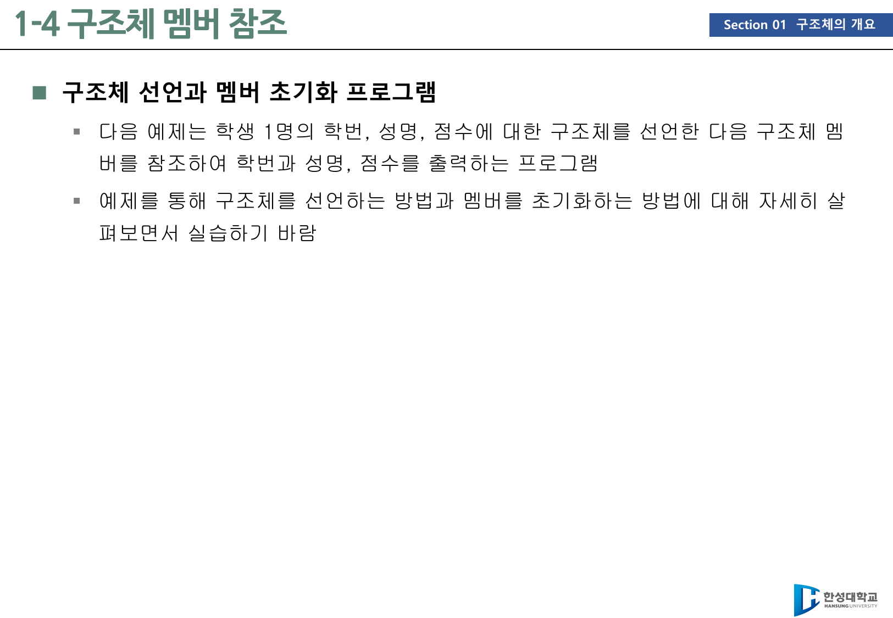
정리하면 구조체 변수는 변수이름.멤버이름 형식으로 읽고 쓴다.
구조체 대입과 복사¶
같은 구조체 자료형끼리는 대입 연산자 =로 값을 복사할 수 있다. 이 부분은 배열과 구조체가 크게 다른 지점이다. 배열은 a = b;처럼 통째로 대입할 수 없지만, 구조체 변수는 같은 자료형이면 통째로 대입할 수 있다.
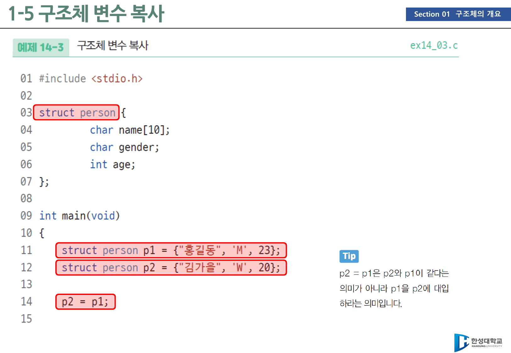
typedef struct {
char name[20];
int age;
} Person;
Person p1 = {"Hong", 20};
Person p2;
p2 = p1; // 같은 Person 자료형이므로 멤버 값이 복사됨
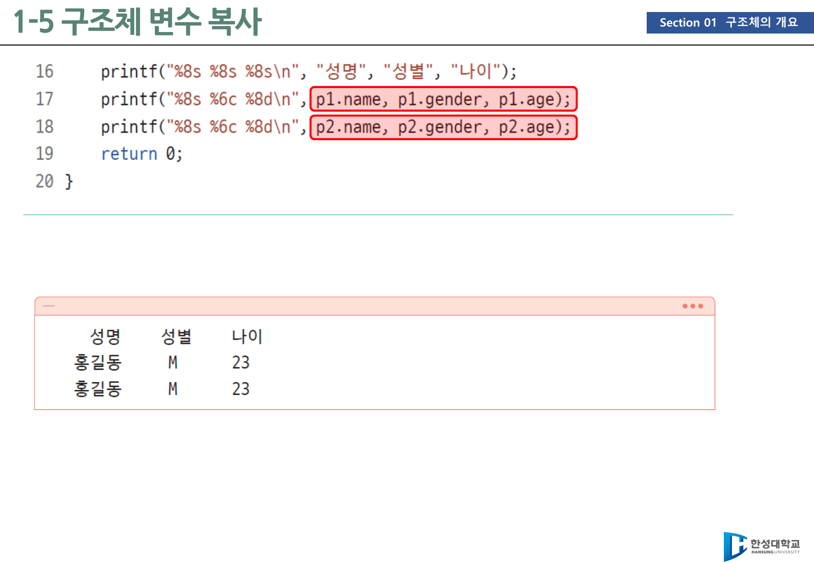
단, 구조체 안에 포인터 멤버가 있으면 주의해야 한다. 포인터 멤버는 "가리키는 데이터 전체"가 아니라 주소값이 복사된다. 그래서 두 구조체가 같은 문자열이나 같은 배열을 가리키는 상태가 될 수 있다. 이것을 얕은 복사(shallow copy)라고 부른다.
typedef struct {
const char *name;
int age;
} PersonView;
PersonView a = {"Kim", 21};
PersonView b = a; // name 문자열의 주소가 복사됨
학생에게는 이렇게 설명하면 좋다. char name[20]은 구조체 안에 문자 칸 20개가 들어 있다. char *name은 구조체 안에 문자열이 있는 주소 하나만 들어 있다. 둘은 비슷해 보이지만 복사와 수명 관리에서 매우 다르다.
4. 구조체 배열¶
학생이 한 명이면 구조체 변수 하나면 충분하다. 학생이 여러 명이면 구조체 배열을 사용한다.
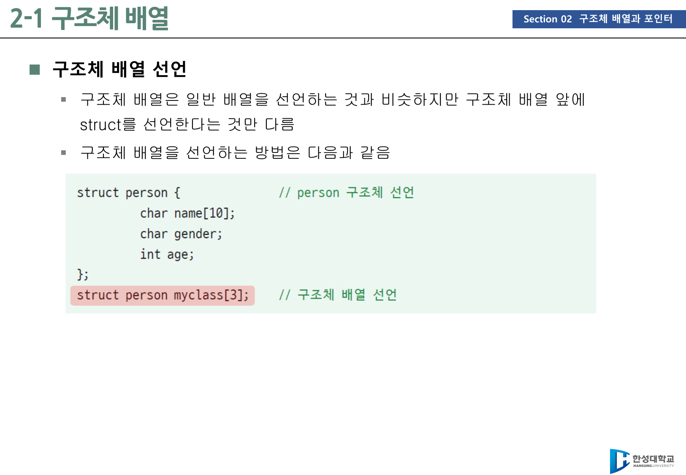
struct student classroom[3] = {
{"Hong", 90, 85, 0.0},
{"Lee", 88, 91, 0.0},
{"Park", 80, 75, 0.0}
};
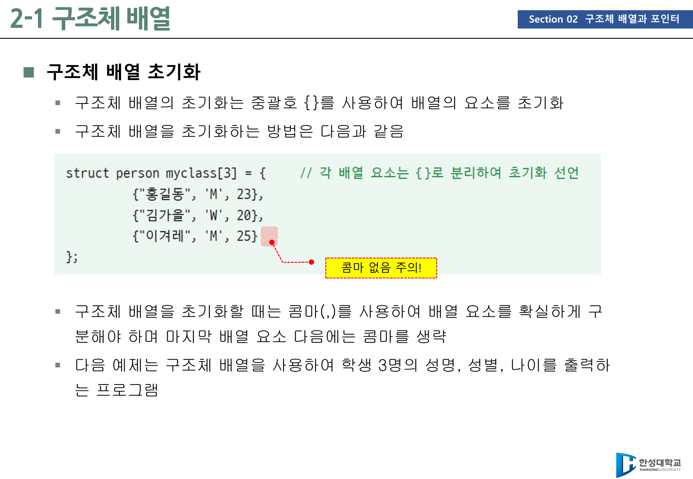
구조체 배열도 일반 배열처럼 인덱스를 사용한다.
for (int i = 0; i < 3; i++) {
classroom[i].avg = (classroom[i].kor + classroom[i].math) / 2.0;
printf("%s %.1f\n", classroom[i].name, classroom[i].avg);
}
Arduino 예제로 바꾸면 SensorPacket packets[10]처럼 여러 센서 패킷을 저장할 수 있다. 10주차 배열과 14주차 구조체가 결합되는 지점이다.
5. 구조체 포인터와 ->¶
구조체도 변수이므로 주소가 있다. 구조체 주소를 저장하는 포인터를 만들 수 있다.
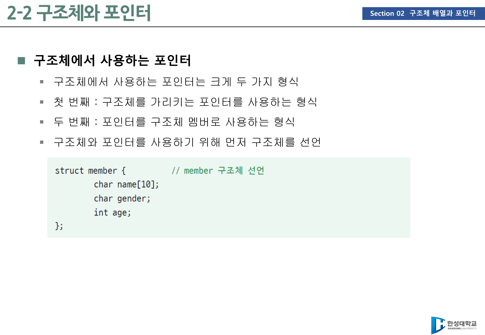
포인터 p가 가리키는 구조체의 멤버에 접근하는 정식 표현은 (*p).name이다.
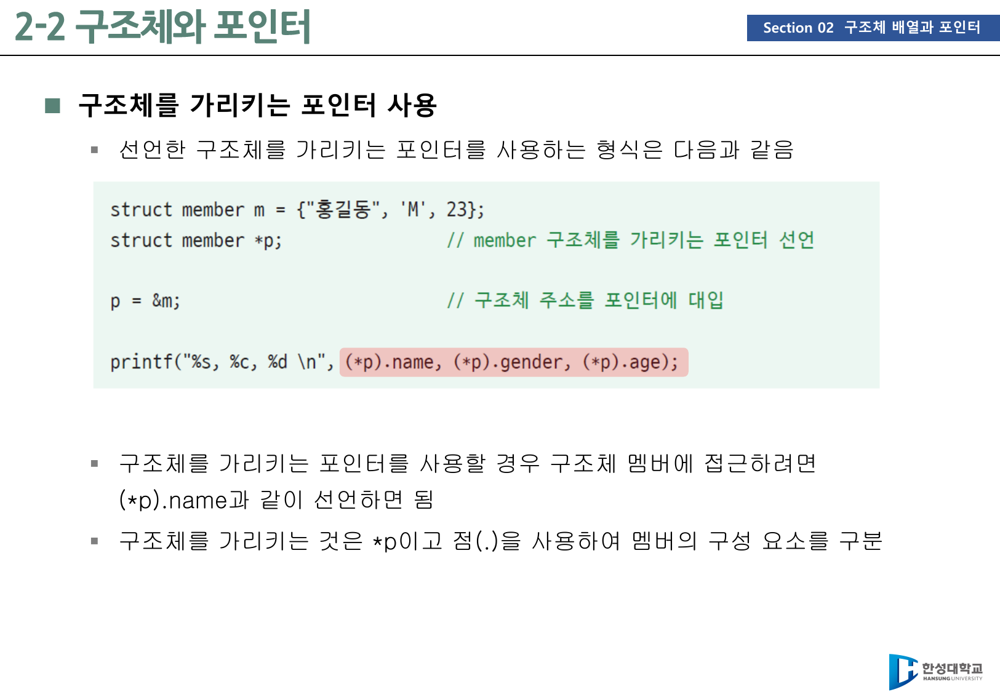
괄호가 필요한 이유는 연산자 우선순위 때문이다. .가 *보다 먼저 계산되므로 *p.name처럼 쓰면 의도와 다르게 해석된다.
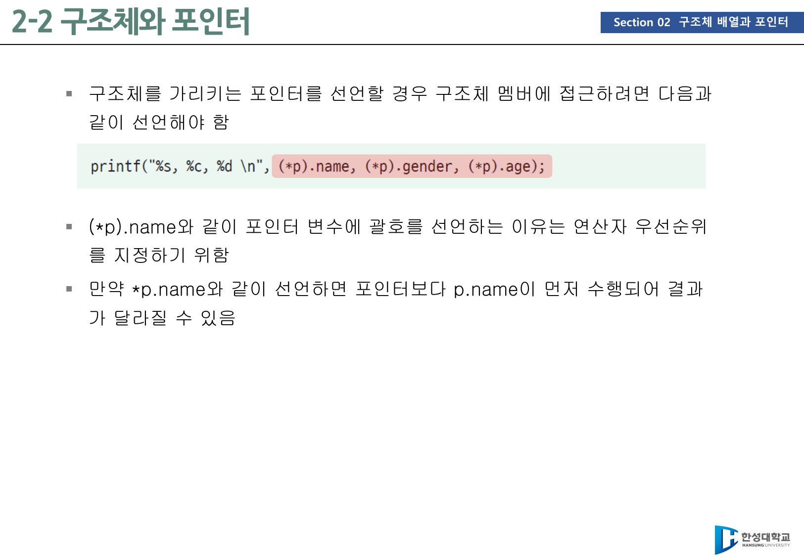
그래서 C는 더 읽기 쉬운 -> 연산자를 제공한다.
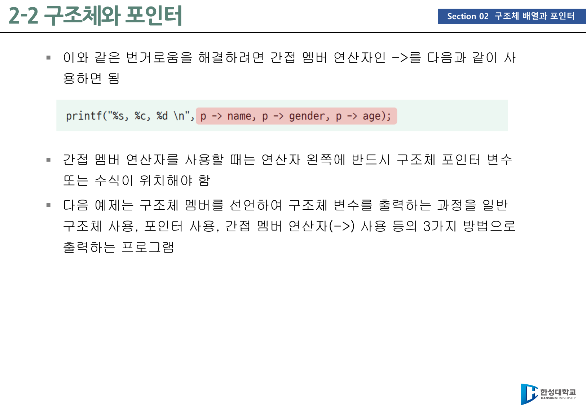
다음 두 표현은 같은 뜻이다.
실무에서는 구조체 포인터를 다룰 때 거의 항상 ->를 사용한다. 함수에서 구조체를 수정해야 할 때도 포인터를 넘기고 ->로 멤버를 바꾸는 패턴이 자주 나온다.
6. 구조체와 함수¶
구조체 변수를 함수 인수로 넘기면 전체 구조체가 복사된다.
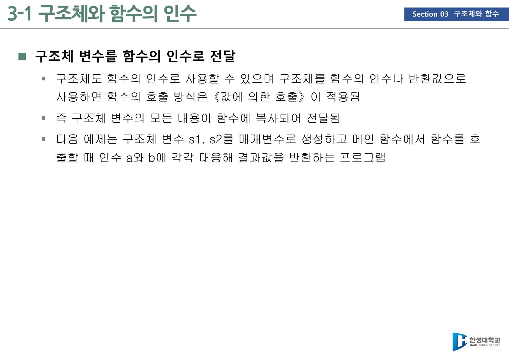
출력만 한다면 값 복사도 괜찮다. 하지만 함수 안에서 원본을 수정하려면 구조체 포인터를 넘겨야 한다.
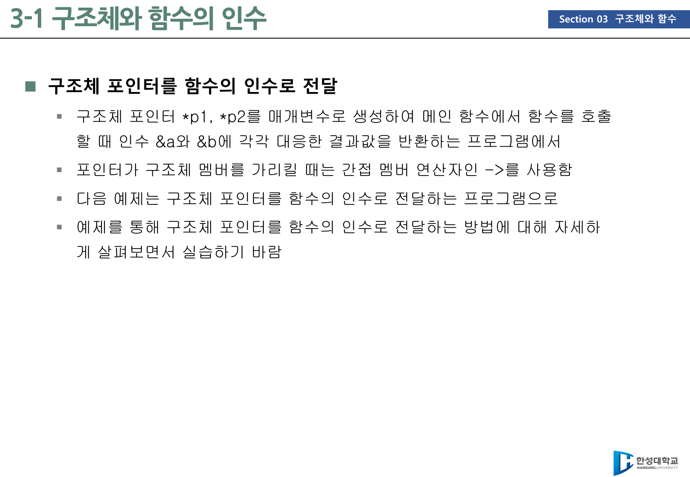
구조체를 함수 반환값으로 사용할 수도 있다.
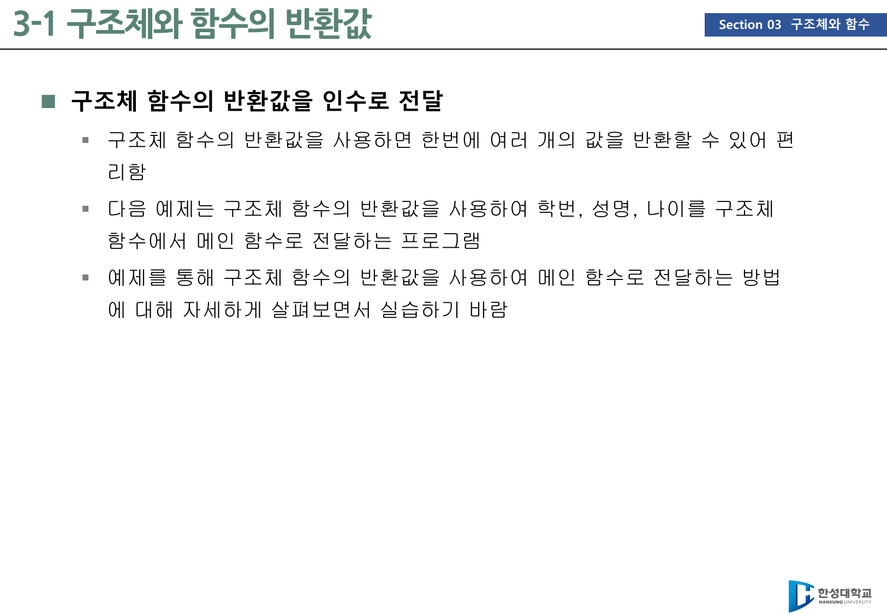
struct student make_student(const char *name, int kor, int math)
{
struct student s = {"", kor, math, 0.0};
strcpy(s.name, name);
s.avg = (kor + math) / 2.0;
return s;
}
이 방식은 함수가 여러 값을 한 번에 돌려주는 것처럼 사용할 수 있다. 단, 큰 구조체를 자주 복사하면 비용이 커질 수 있으므로 수정이 필요한 함수는 포인터를 넘기는 편이 좋다.
구조체 반환값을 읽는 방법¶
실습 자료는 구조체 함수의 반환값을 별도 슬라이드로 다룬다. 핵심은 함수가 int 하나만 돌려주는 것이 아니라, 여러 멤버를 가진 구조체 한 덩어리를 돌려줄 수 있다는 점이다.
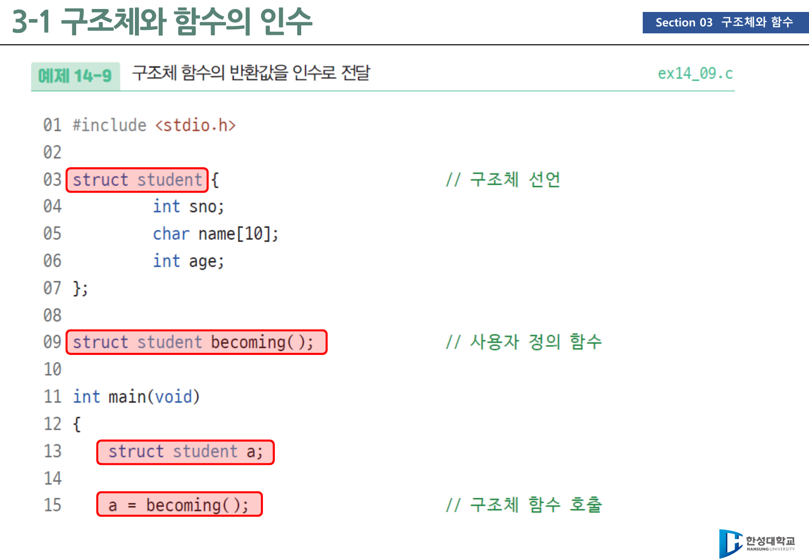
typedef struct {
int id;
char name[20];
int age;
} StudentInfo;
StudentInfo make_info(int id, const char *name, int age)
{
StudentInfo s = {id, "", age};
strcpy(s.name, name);
return s;
}
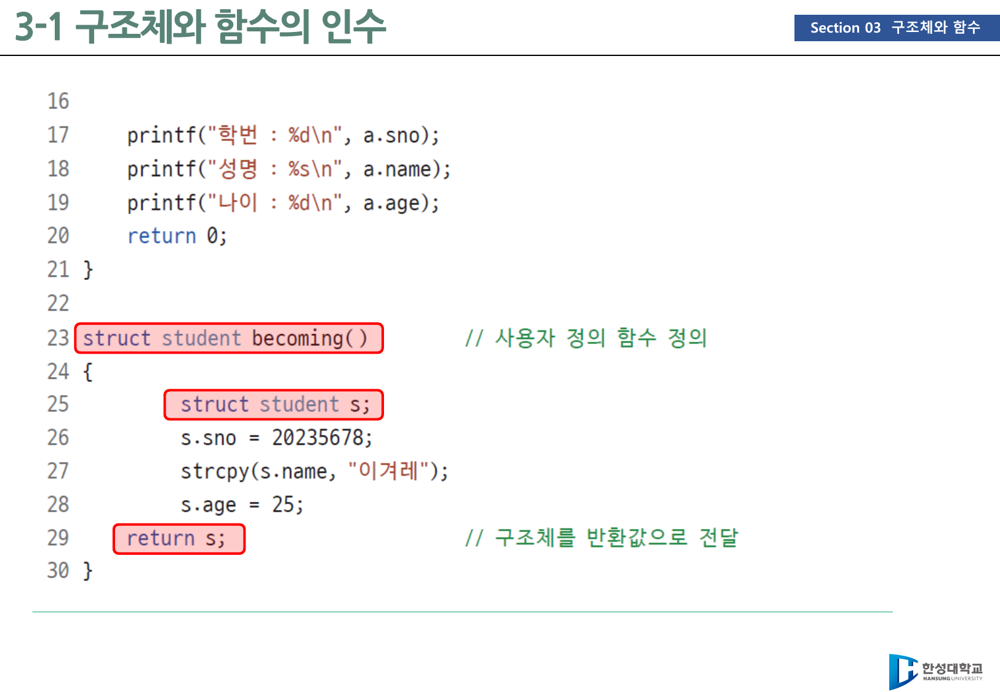
이 코드는 id, name, age 세 값을 따로 반환하지 않는다. 세 값을 StudentInfo라는 하나의 묶음으로 만든 뒤 그 묶음을 반환한다. 이 관점은 ROS2 메시지를 이해할 때도 도움이 된다. 메시지 하나가 여러 필드를 함께 가지고 이동하기 때문이다.
7. 구조체 안의 포인터¶
구조체 멤버로 포인터를 넣을 수도 있다.
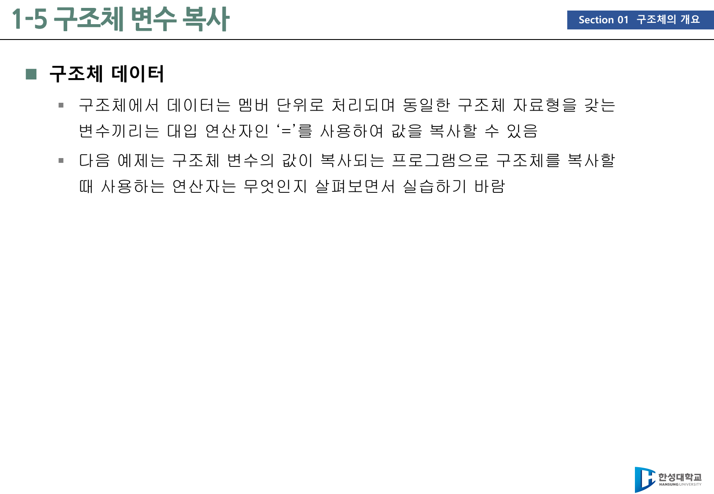
이 경우 name 멤버는 문자열 자체를 저장하는 배열이 아니라 문자열이 있는 위치를 가리키는 주소다. 포인터 멤버를 사용할 때는 "이 주소가 가리키는 데이터가 언제까지 살아 있는가"를 생각해야 한다.
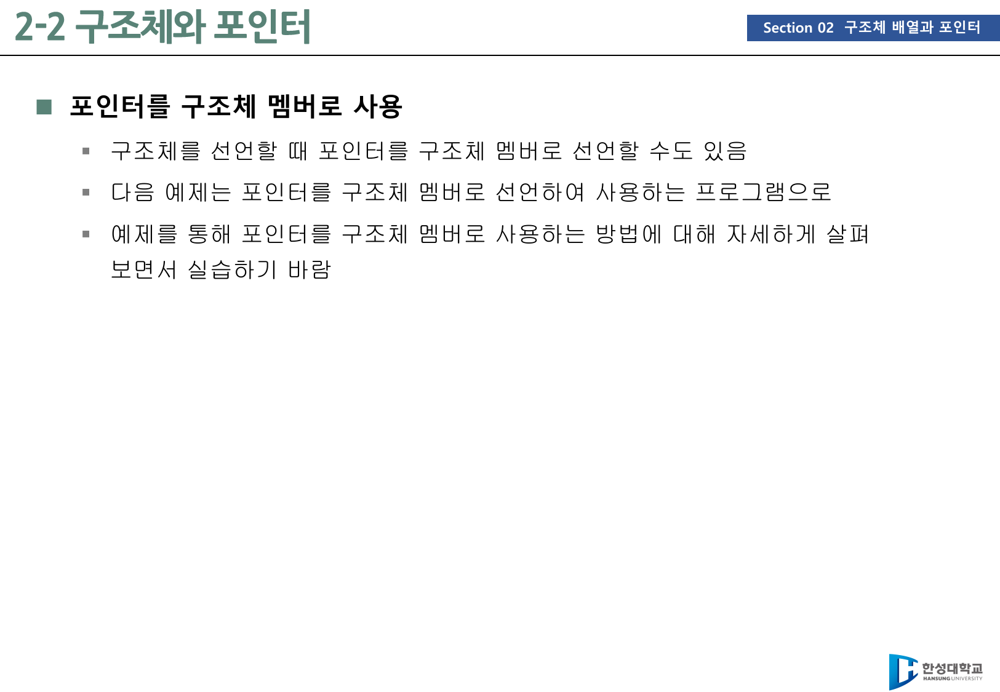
포인터 멤버는 세 가지 질문을 항상 같이 확인해야 한다.
| 질문 | 확인 이유 |
|---|---|
| 무엇을 가리키는가? | 문자열, 배열, 다른 구조체 등 대상 확인 |
| 그 대상은 언제까지 살아 있는가? | 지역 변수 주소를 저장하면 함수 종료 뒤 위험 |
| 복사하면 무엇이 복사되는가? | 데이터 전체가 아니라 주소만 복사될 수 있음 |
연결리스트는 구조체 안에 다음 노드의 주소를 넣는 대표적인 예다.
next는 다음 Node의 주소를 저장한다. 배열은 메모리에서 연속된 칸을 사용하지만, 연결리스트는 포인터로 다음 데이터를 찾아간다. 이번 주에는 깊은 자료구조 구현보다 "구조체 안에 같은 구조체를 가리키는 포인터를 넣을 수 있다"는 감각을 잡는 것이 목표다.
8. 이중 포인터 빠른 복습¶
14주차 실습 자료에는 이중 포인터가 함께 등장한다. 이중 포인터는 포인터의 주소를 저장하는 포인터다.
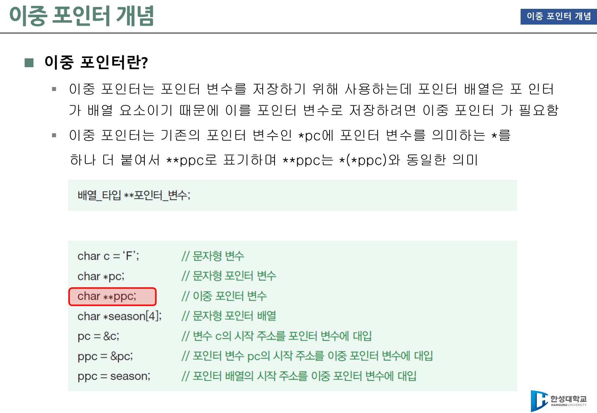
char c = 'F';
char *pc = &c;
char **ppc = &pc;
printf("%c\n", c);
printf("%c\n", *pc);
printf("%c\n", **ppc);
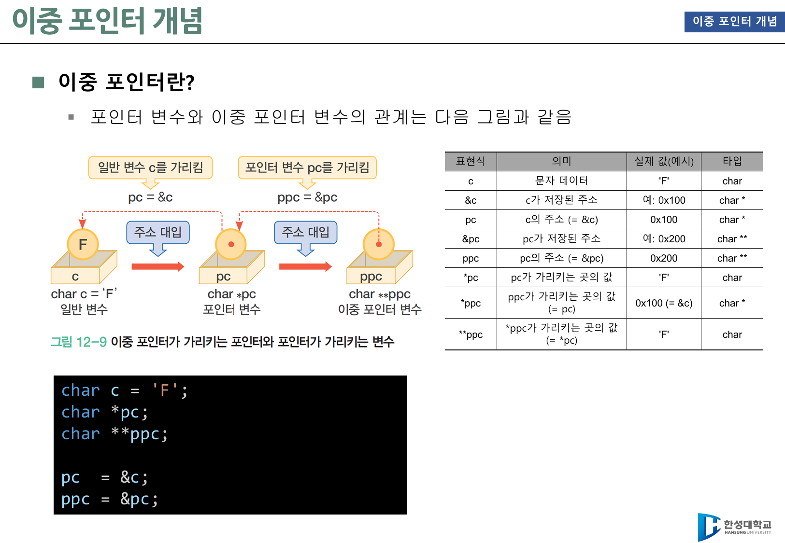
문자열 배열을 다룰 때 char **가 자주 나온다. 예상 문제 #1은 이 개념을 확인하는 문제다.
9. Arduino와 ROS2로 연결하기¶
구조체는 통신과 잘 어울린다. 메모리 안에서는 구조체로 다루고, 시리얼이나 WiFi로 보낼 때는 문자열로 바꾸면 사람이 확인하기 쉽다.
이 구조체를 "S,42.0,25.0,RUN" 같은 문자열로 바꾸는 과정을 직렬화라고 한다. 반대로 문자열을 다시 구조체로 바꾸는 과정을 역직렬화라고 한다.
Arduino UNO R4 예제 code/arduino/15_struct_packet/15_struct_packet.ino는 센서 패킷 구조체를 만들어 시리얼로 출력한다. PC C 예제 packet_parser.c와 ex14_struct_packet_list.c는 그 문자열을 다시 구조체로 해석한다.
ROS2 메시지도 결국 이름 붙은 필드들의 묶음이다. 예를 들어 geometry_msgs/msg/Twist는 선속도와 각속도 필드를 가진 구조체처럼 생각할 수 있다. C에서 구조체로 데이터를 잘 묶는 연습은 15주차 ROS2 토픽을 이해하는 준비가 된다.
10. 실습 14-1 · 학생 구조체 만들기¶
파일: code/c/examples/ex14_struct_student.c
실습 순서:
Student구조체의 멤버를 읽는다.make_student()가 구조체를 반환하는 방식을 확인한다.update_score()가 구조체 포인터를 받아 원본을 수정하는 방식을 확인한다.- 구조체 배열을 반복문으로 순회한다.
핵심 질문:
Student s와Student *s는 무엇이 다른가?- 함수에서 평균을 수정하려면 왜 포인터가 필요한가?
students[i].avg와p->avg는 언제 사용하는가?
11. 실습 14-2 · 구조체 패킷과 연결리스트 맛보기¶
파일: code/c/examples/ex14_struct_packet_list.c
이 예제는 세 가지를 한 번에 연결한다.
SensorPacket구조체로 거리, 속도, 상태를 묶는다.serialize_packet()과parse_packet()으로 문자열 패킷을 왕복한다.Node구조체의next포인터로 두 개의 패킷을 연결한다.
이 예제를 실행하면 Arduino가 보낸 것과 같은 형식의 문자열을 PC에서 먼저 검증할 수 있다. 보드에 올리기 전에 PC에서 문자열 형식을 확인하는 습관은 통신 디버깅 시간을 크게 줄인다.
12. 원본 도전 문제 풀이 방향¶
도전 문제는 구조체 선언, 구조체 대입, 구조체 함수 반환값을 확인한다.
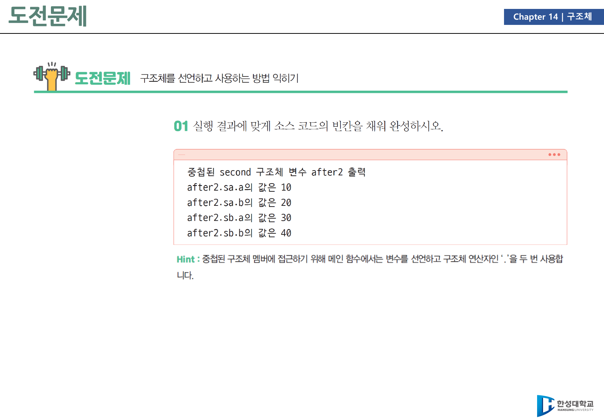
첫 번째 문제는 중첩 구조체의 멤버 접근을 확인한다. 구조체 안에 다른 구조체가 들어 있으면 after2.before1.num처럼 점 연산자를 이어서 사용한다.
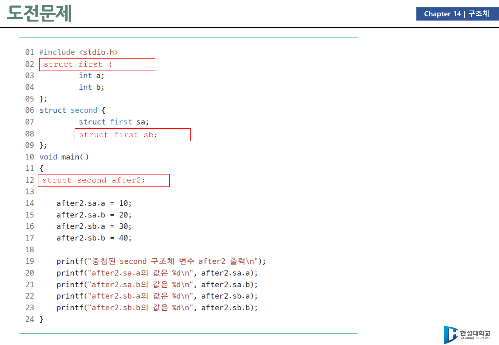
풀이 순서:
struct first가 먼저 선언되어 있는지 확인한다.struct second안에struct first sb;처럼 첫 번째 구조체 변수가 멤버로 들어가는지 확인한다.- 바깥 구조체 변수에서 안쪽 구조체 멤버를 읽을 때는 점을 두 번 사용한다.
이 문제의 핵심은 "구조체 안에 구조체가 들어가도 멤버 접근 규칙은 그대로"라는 점이다. 바깥 멤버로 한 번 들어가고, 안쪽 멤버로 한 번 더 들어간다고 설명하면 된다.
두 번째 문제는 구조체 변수끼리 대입할 수 있는지 확인한다.
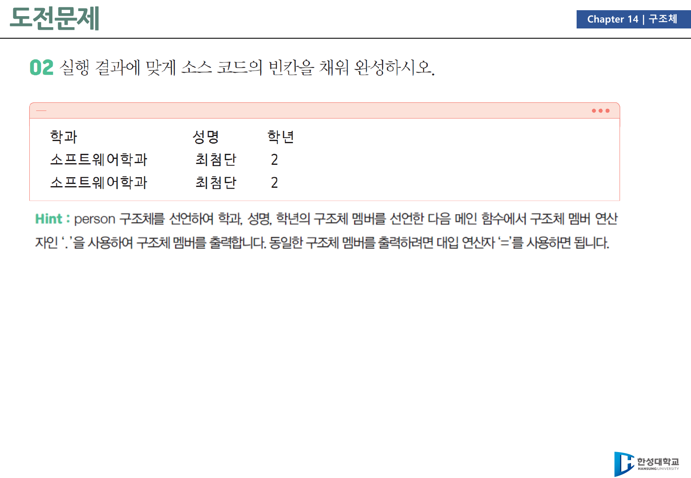
같은 구조체 자료형끼리는 p2 = p1;처럼 대입할 수 있다. 이때 멤버 값이 복사된다.
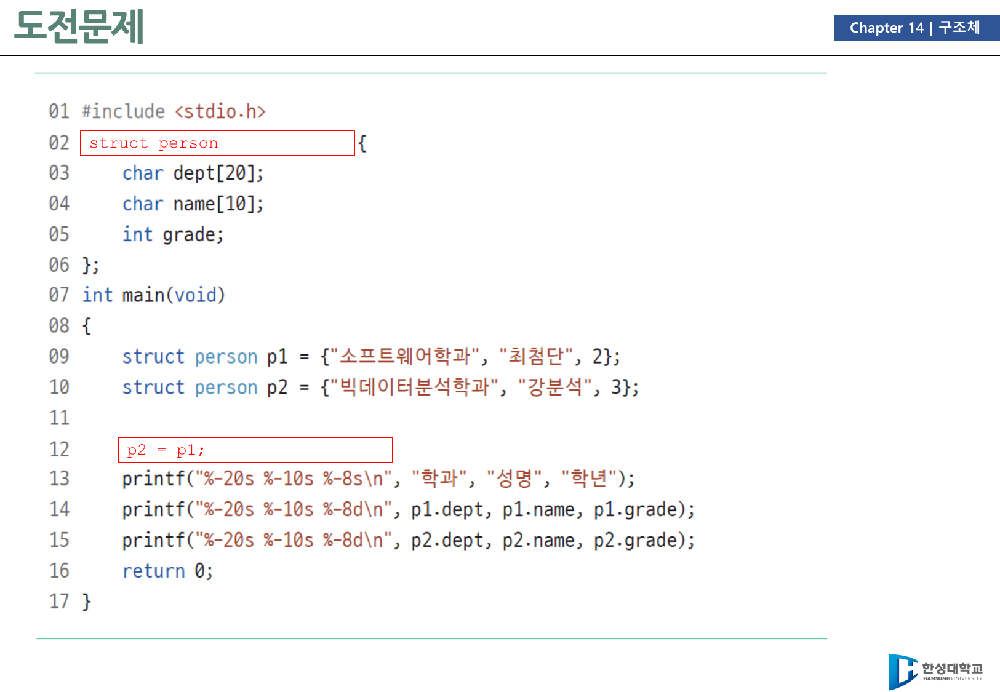
풀이 순서:
p1에 이름, 학번, 학년이 저장된다.p2 = p1;이 실행되면p1의 모든 멤버 값이p2로 복사된다.- 그 뒤
p2를 출력하면p1과 같은 내용이 나온다.
여기서 꼭 비교할 점은 배열이다. int a[3], int b[3]는 b = a;로 복사할 수 없다. 하지만 struct person p1, struct person p2는 같은 구조체 자료형이므로 p2 = p1;이 가능하다.
세 번째 문제는 구조체를 함수 인수와 반환값으로 사용하는 문제다.
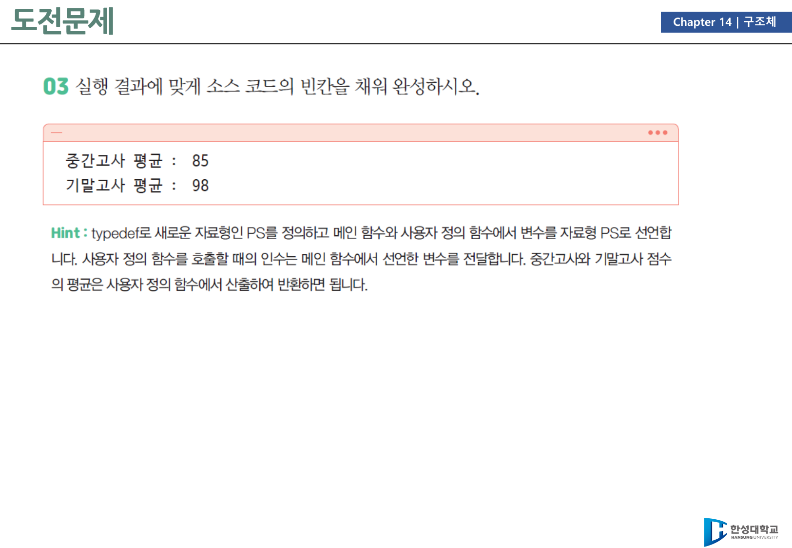
구조체를 반환하면 여러 값을 한 덩어리로 돌려주는 효과를 낼 수 있다.
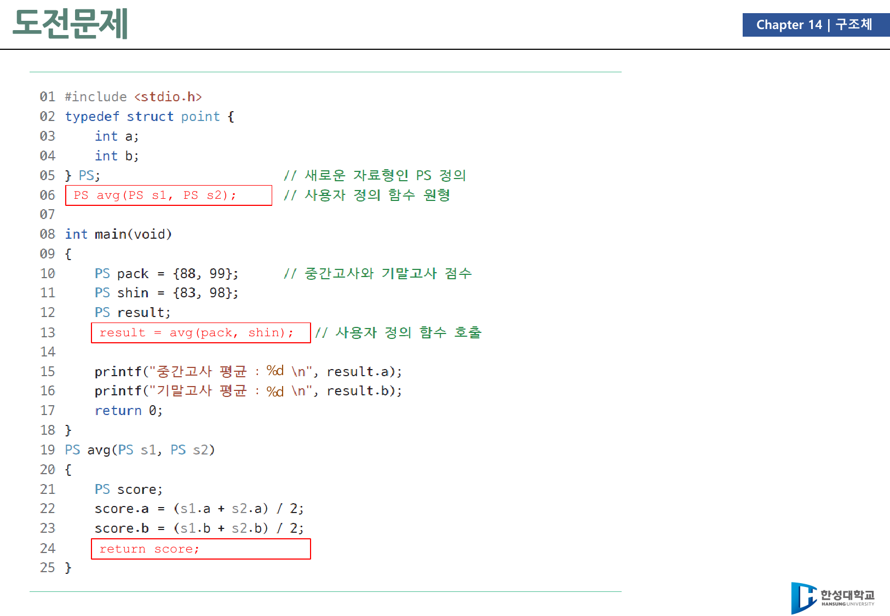
풀이 순서:
typedef로 구조체 별칭PS가 만들어졌는지 확인한다.PS avg(PS s1, PS s2);는 구조체 두 개를 받아 구조체 하나를 반환하는 함수 원형이다.result = avg(pack, shin);에서는pack,shin구조체가 함수로 복사되어 들어간다.- 함수 안에서 평균 또는 합산 결과를
score구조체에 채운 뒤return score;로 반환한다.
이 문제를 풀 때는 "함수가 반환하는 값이 숫자 하나가 아니라 구조체 한 묶음"이라는 사실을 먼저 표시해 두면 덜 헷갈린다.
수업 중에는 함수 호출 화살표를 그려서 pack, shin이 함수 안의 s1, s2로 복사되고, score가 다시 result로 복사된다고 보여 주면 좋다.
13. 예상 문제 해설¶
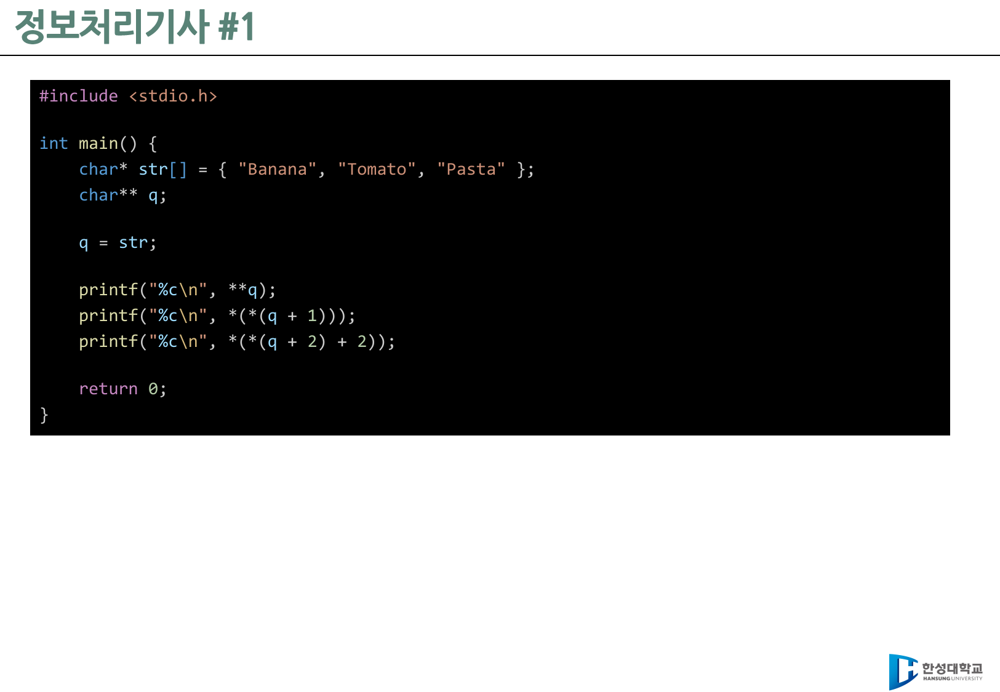
예상 문제 #1은 문자열 배열과 이중 포인터 문제다.
예상 문제 #1 · 문자열 배열과 이중 포인터¶
char* str[] = { "Banana", "Tomato", "Pasta" };
char** q = str;
printf("%c\n", **q);
printf("%c\n", *(*(q + 1)));
printf("%c\n", *(*(q + 2) + 2));
이 문제는 char* str[]와 char** q의 관계를 읽는 문제다. 먼저 자료형을 말로 바꾸면 다음과 같다.
| 표현 | 의미 | 가리키는 값 |
|---|---|---|
str |
문자열 포인터 배열의 첫 번째 요소 주소 | &str[0] |
str[0] |
첫 번째 문자열의 시작 주소 | "Banana" |
str[1] |
두 번째 문자열의 시작 주소 | "Tomato" |
str[2] |
세 번째 문자열의 시작 주소 | "Pasta" |
q |
str의 시작 주소를 저장한 이중 포인터 |
&str[0] |
풀이 순서:
q = str;이므로q는str[0]의 위치를 가리킨다.*q는str[0], 즉"Banana"의 시작 주소다.**q는"Banana"의 첫 글자이므로B다.q + 1은str[1]의 위치로 이동한다.*(q + 1)은"Tomato"의 시작 주소다.*(*(q + 1))은"Tomato"의 첫 글자이므로T다.q + 2는str[2]의 위치로 이동한다.*(q + 2)는"Pasta"의 시작 주소다.*(q + 2) + 2는"Pasta"에서 두 칸 이동한 주소다.*(*(q + 2) + 2)는"Pasta"의 세 번째 글자이므로s다.
출력:
시험장에서 이 문제를 풀 때는 q + 1, q + 2를 문자 하나 이동으로 착각하면 안 된다. q는 char**이므로 q + 1은 다음 문자열 포인터 요소로 이동한다. 문자 하나 이동은 *(q + 2) + 2처럼 문자열 시작 주소를 얻은 뒤에 일어난다.
| 헷갈리는 표현 | 읽는 법 | 결과 |
|---|---|---|
**q |
q가 가리키는 문자열의 첫 글자 |
B |
*(*(q + 1)) |
다음 문자열의 첫 글자 | T |
*(*(q + 2) + 2) |
세 번째 문자열에서 두 칸 이동 후 문자 | s |
확인 문제:
printf("%c\n", *(*(q + 0) + 3));의 출력은?printf("%c\n", *(*(q + 1) + 2));의 출력은?printf("%s\n", *(q + 2));의 출력은?
정답:
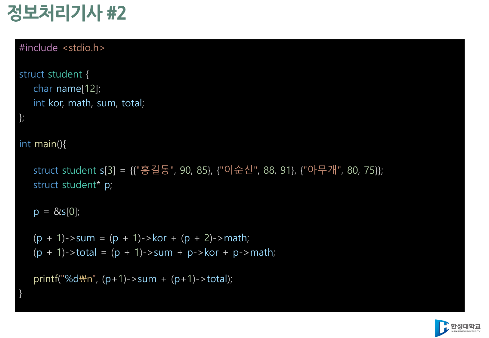
예상 문제 #2는 구조체 배열과 포인터 연산 문제다.
예상 문제 #2 · 구조체 배열과 포인터 연산¶
(p + 1)->sum = (p + 1)->kor + (p + 2)->math;
(p + 1)->total = (p + 1)->sum + p->kor + p->math;
printf("%d\n", (p + 1)->sum + (p + 1)->total);
이 문제는 p = &s[0]; 이후 포인터 연산이 어느 학생을 가리키는지 확인하는 문제다.
| 표현 | 같은 표현 | 의미 |
|---|---|---|
p |
&s[0] |
첫 번째 학생 |
p + 1 |
&s[1] |
두 번째 학생 |
p + 2 |
&s[2] |
세 번째 학생 |
(p + 1)->kor |
s[1].kor |
두 번째 학생 국어 점수 |
(p + 2)->math |
s[2].math |
세 번째 학생 수학 점수 |
초기 데이터:
| 인덱스 | 이름 | kor |
math |
sum |
total |
|---|---|---|---|---|---|
s[0] |
홍길동 | 90 | 85 | 초기값 0 | 초기값 0 |
s[1] |
이순신 | 88 | 91 | 초기값 0 | 초기값 0 |
s[2] |
아무개 | 80 | 75 | 초기값 0 | 초기값 0 |
계산 1단계:
| 항목 | 값 |
|---|---|
(p + 1)->kor |
s[1].kor = 88 |
(p + 2)->math |
s[2].math = 75 |
(p + 1)->sum |
88 + 75 = 163 |
계산 2단계:
| 항목 | 값 |
|---|---|
(p + 1)->sum |
163 |
p->kor |
s[0].kor = 90 |
p->math |
s[0].math = 85 |
(p + 1)->total |
163 + 90 + 85 = 338 |
계산 3단계:
| 항목 | 값 |
|---|---|
(p + 1)->sum |
163 |
(p + 1)->total |
338 |
| 최종 출력 | 163 + 338 = 501 |
따라서 최종 출력은 다음과 같다.
이 문제의 핵심은 ->가 구조체 포인터의 멤버 접근이라는 점이다. 다음 두 표현은 같은 의미다.
시험장에서 실수하기 쉬운 지점:
| 실수 | 왜 틀리는가 |
|---|---|
(p + 1)->math를 사용하는 줄로 착각 |
실제 첫 줄은 (p + 2)->math를 사용한다 |
p->kor를 두 번째 학생으로 착각 |
p는 여전히 s[0]을 가리킨다 |
sum과 total이 모든 학생에게 저장된다고 착각 |
이 코드에서는 (p + 1), 즉 s[1]의 sum, total만 바뀐다 |
확인 문제:
- 첫 줄이
(p + 1)->sum = p->kor + (p + 1)->math;로 바뀌면sum은 얼마인가? - 둘째 줄이
(p + 2)->total = (p + 1)->sum + (p + 2)->kor;로 바뀌면 어느 학생의total이 바뀌는가? printf("%d\n", s[1].sum);을 추가하면 무엇이 출력되는가?
정답:
예상 문제 풀이 체크리스트¶
-
char* str[]는 문자열 배열이 아니라 문자열을 가리키는 포인터 배열임을 설명할 수 있다. -
char** q에서q + 1은 다음 문자열 포인터로 이동한다는 점을 설명할 수 있다. -
p = &s[0]일 때p,p + 1,p + 2가 각각 어떤 구조체 원소를 가리키는지 표시할 수 있다. -
->표현을 배열 인덱스 표현으로 바꾸어 계산할 수 있다. - 최종 출력
B,T,s,501을 계산 과정과 함께 설명할 수 있다.
14. 형성평가 체크포인트¶
- 배열과 구조체의 차이를 예로 설명할 수 있다.
- 구조체 변수의 멤버에
.로 접근할 수 있다. - 구조체 포인터의 멤버에
->로 접근할 수 있다. - 구조체 배열을 반복문으로 순회할 수 있다.
- 구조체를 함수에 값으로 넘길 때 복사된다는 점을 설명할 수 있다.
- 구조체 포인터를 함수에 넘겨 원본을 수정할 수 있다.
-
Node구조체의next포인터가 왜 연결리스트의 핵심인지 설명할 수 있다. - Arduino 문자열 패킷과 ROS2 메시지가 "필드 묶음"이라는 점에서 구조체와 연결된다는 것을 설명할 수 있다.
15. 과제¶
Student구조체에total,grade멤버를 추가하고 평균에 따라A,B,C를 저장한다.SensorPacket구조체 배열 5개를 만들고 평균 거리와 가장 빠른 속도를 출력한다.Node3개를 연결한 뒤 반복문으로 모든 노드를 출력한다.- Arduino
15_struct_packet예제의 상태 문자열을STOP,SLOW,RUN중 하나로 바꾸어 출력한다. - 예상 문제 #1, #2의 출력 과정을 종이에 주소 그림으로 설명한다.
16. 참조 예제¶
- PC C:
ex14_struct_student.c - PC C:
ex14_struct_packet_list.c - PC C:
packet_parser.c - Arduino UNO R4:
15_struct_packet - ROS2 bridge:
stella_n2_bridge